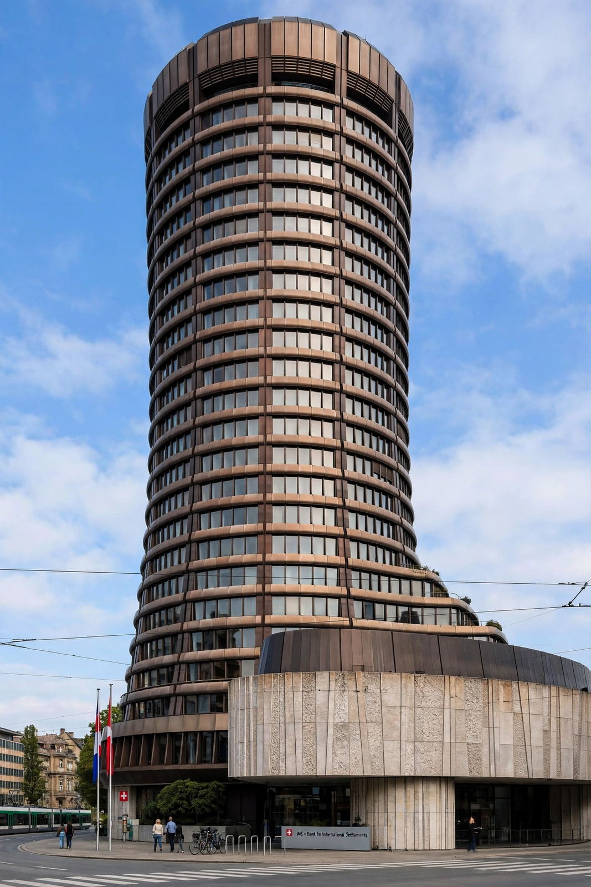

| Bank for International Settlements | |
|---|---|
 | |
| Founded | 17 May 1930 |
| Headquarters | Basel, Switzerland |
| Type | International financial institution |
| Membership | 63 central banks |
| Purpose | Central bank cooperation; "the central bank for central banks" |
The Bank for International Settlements (BIS) is an international financial institution owned by central banks that fosters monetary and financial cooperation and serves as a bank for central banks. Established in 1930 under the Hague agreements to handle German reparations payments after the First World War, it is headquartered in Basel, Switzerland, with representative offices in Hong Kong and Mexico City.
The BIS provides banking services to central banks and international organisations, holds a portion of many countries' reserves, and convenes the regular Basel meetings of central bank governors. It hosts the Basel Committee on Banking Supervision, which issues the Basel capital standards (Basel I–III) that shape global bank regulation, and the Financial Stability Board's predecessor bodies. Its economics department publishes influential Annual Economic Reports and the definitive statistics on international banking and debt securities.
After reparations dwindled in the 1930s the BIS reinvented itself as a forum for central-bank cooperation; it controversially transferred Czechoslovak gold to the Reichsbank in 1939 and was nearly abolished at Bretton Woods in 1944. It later served as agent for European payments arrangements, helped prepare European monetary union, and since the 1990s has expanded membership to major emerging-market central banks.